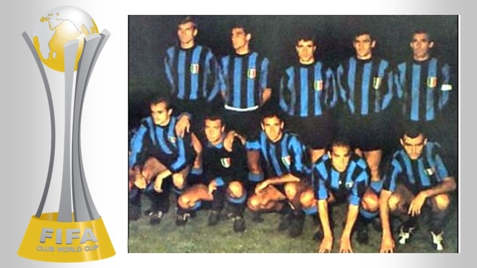

PALMARÈS
-
Scudetti: 20
1909-1910; 1919-1920; 1929-1930; 1937-1938; 1939-1940; 1952-1953; 1953-1954; 1962-1963; 1964-1965; 1965-1966; 1970-1971; 1979-1980; 1988-1989; 2005-2006; 2006-2007; 2007-2008; 2008-2009; 2009-2010; 2020-2021; 2023-2024
-
Coppe Italia: 9
1938-1939; 1977-1978; 1981-1982; 2004-2005; 2005-2006; 2009-2010; 2010-2011; 2021-2022; 2022-2023
-
Supercoppe italiane: 8
1989; 2005; 2006; 2008; 2010; 2021; 2022; 2023
-
Coppa dei Campioni/UEFA Champions League: 3
1963-1964; 1964-1965; 2009-2010
-
Coppa UEFA: 3
1990-1991; 1993-1994; 1997-1998
-
Coppe Intercontinentali: 2
1964; 1965
-
Coppa del Mondo per Club: 1
2010


